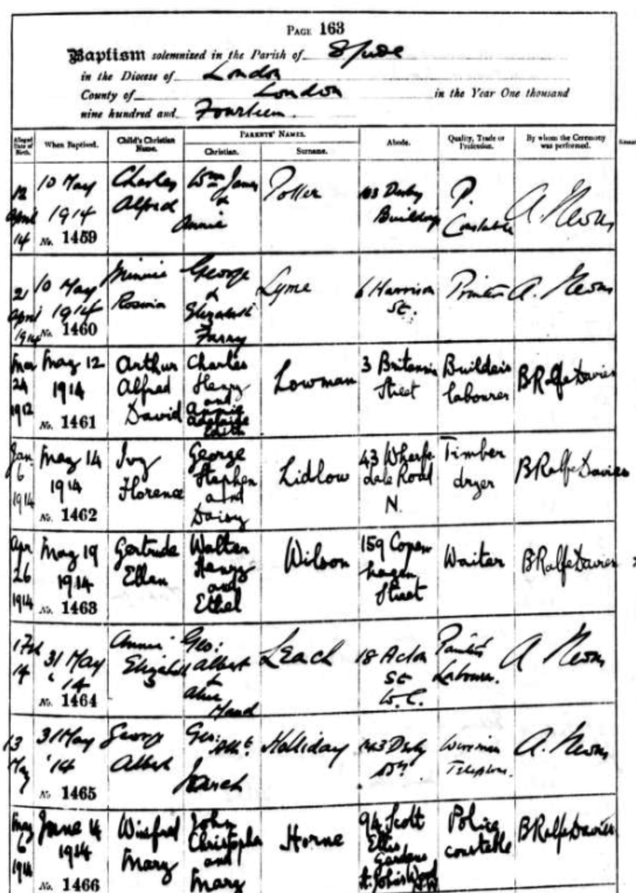
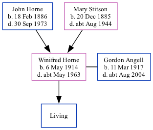

Winifred Mary Angell (née Horne) 1914 - c1963
[ Home ] | [ Calendar ] | [ Surnames Index ] | [ Family History ]A railroad clerk and the daughter of John Horne (a police constable) and Mary Stitson, Winifred Horne, the second cousin once-removed on the father's side of Nigel Horne, was born in Marylebone, London, England on May 6, 19141,2, was baptized in Camden, London, England on Jun 14, 1914. She married Gordon Angell (with whom she had 1 surviving child) in Paddington, London, England around Nov 19404.
Throughout her life, she lived on 19 Grittleton Road, Maida Vale, London on Sep 29, 19391; and at 55 Maitland Court, Lancaster Terrace in Paddington in 19515.
She died c. May 1963 in Wandsworth, London3.
Parents
- John Christopher was born on Feb 18, 1886
- Mary was born on Dec 20, 1885
Citations
- 1939 Register - Findmypast (was recorded at this address)
- England & Wales births 1837-2006 - Findmypast
- England & Wales deaths 1837-2007 - Findmypast
- England & Wales marriages 1837-2008 - Findmypast
- London, England, Electoral Registers, 1832-1965 Ancestry.com Operations, Inc.
Media
Winifred Mary Horne - baptism

1939 Register Transcription - TNA-R39-0430-0430B-012-10
England & Wales births 1837-2006 - BMD/B/1914/2/AZ/000759/083
England & Wales marriages 1837-2008 - BMD/M/1940/4/AZ/000756/094
England & Wales deaths 1837-2007 - BMD/D/1963/2/AZ/000014/120
1939 Register - TNA/R39/0430/0430B/012/12
Family Tree
Generated by Ged2Site. Last updated on Jul 20, 2025